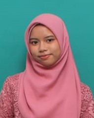

Lintang Metyaputri
+6285852282611
lintangmetya1@gmail.com
Tentang saya
Lulusan SMA jurusan MIPA yang saat ini menempuh pendidikan di Universitas Telkom, Fakultas Rekayasa Industri, Prodi S1 Sistem Informasi memiliki keinginan untuk mengembangkan diri di bidang akademik dan menambah pengalaman yang sejalan dengan program studi yang sedang dijalani. Memiliki pengalaman organisasi di bidang keuangan sebagai bendahara.
Pendidikan
2021 - 2024 | SMA Negeri 3 Purwakarta | Jurusan MIPA
2024 - Sekarang | Universitas Telkom | Program Studi S1 Sistem Informasi
Pengalaman Organisai
2024 | Bendahara ARTVENTURA Vol. II | Universitas Telkom
- Mengumpulkan dana yang diperlukan melalui DAP.
- Mencatat pengeluaran dan pemasukan dana event.
- Menghitung dan memastikan catatan keuangan sesuai dengan dana yang ada.
- Berkomunikasi dengan staff dari berbagai divisi.
2025 | Bendahara First Meet UKM Embun 2025 | Universitas Telkom
- Memastikan, mengecek, dan mengumpulkan bukti transaksi.
- Mengumpulkan dana yang diperlukan melalui DAP.
- Mencatat pengeluaran dan pemasukan dana event.
- Menghitung dan memastikan catatan keuangan sesuai dengan dana yang ada.
- Berkomunikasi dengan staff dari berbagai divisi.
- Membantu proses evaluasi acara dengan membuat laporan pertanggungjawaban
Kemampuan
Hard Skills:
- Bahasa: Indonesia dan Inggris
- Microsft Office: Word, PowerPoint, Excel
- Canva
- Figma
- Bahasa Pemrogramn: C++, C#
Soft Skills:
- Time Management
- Crtitical Thinking
- Problem Solving
- Discipline
- Communication